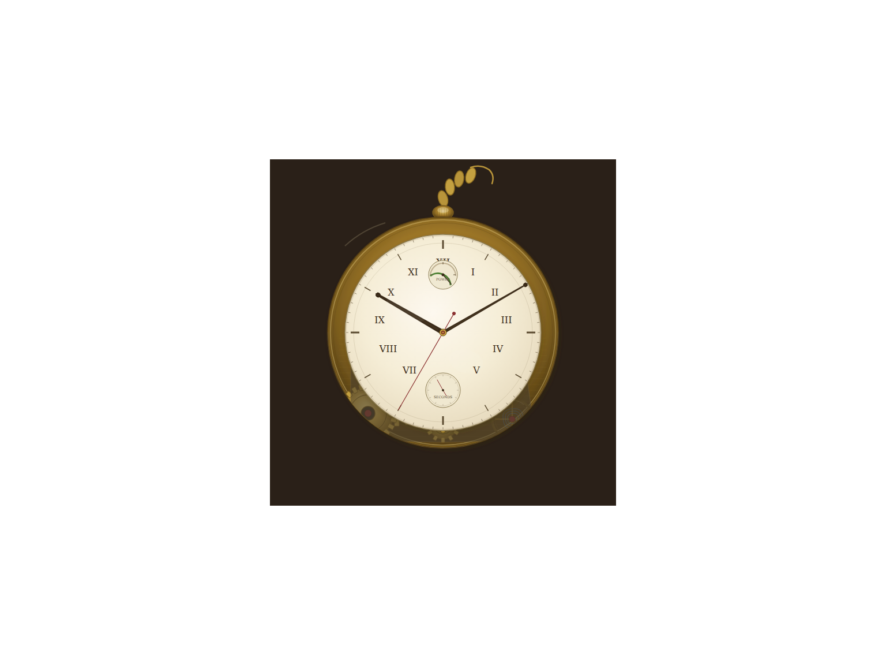

iter 0 0.67 runtime oktouched 1
intent
This iteration establishes the complete visual specification for the pocket watch. The director should now produce the initial SVG, directly rendering the circular case, cream dial with Roman numerals, three hands at specified positions, two sub-dials, visible bottom-half gears with a balance wheel, and the attached chain, all within a centered 600×600 viewBox using a metallic brass palette and clean line art.
judge critique
The balance wheel is classified as MISSING, which is a hard constraint for the movement detail; additionally, the minute tick marks are PARTIAL (sparse/irregular) and the second hand pivot is misaligned. The most impactful next change is to explicitly render a distinct balance wheel with a hairspring in the bottom-right movement area and correct the second hand's pivot to the exact dial center. Score adjusted from first-pass classifications: 10 PRESENT, 1 HIDDEN, 8 PARTIAL, 1 MISSING.
runtime check
artifact.svg parses as XML
commit
iter/0: view diff
fcc39cc2